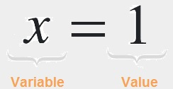

<div class="overflow-auto mt-2 mx-10 py-4">
    <div class="bg-app-bar px-6  border-b sticky left-0 flex h-16  items-center">
        <h2 class="title my-0 ltr:pr-4 rtl:pl-4 ltr:mr-4 rtl:ml-4 ltr:border-r rtl:border-l hidden sm:block flex-none">
            Services
        </h2>

        <div class="bg-foreground rounded-full border px-4 w-3/5 flex-auto flex items-center  border-gray-300">
            <mat-icon class="icon-sm text-secondary" svgIcon="mat:search"></mat-icon>
            <input (keyup)="applyFilter($event)" class="px-4 py-2 border-0 outline-none w-full bg-transparent"
                placeholder="Search..." #input>
        </div>
        <span class="flex-1"></span>
        <div>
            <button mat-raised-button (click)="CreateService()" class="bg-orange-500 text-white rounded-none">
                Create service
            </button>
        </div>
    </div>

    <div *ngIf="services.length>0" class="card bg-[#eeeeee]">
        <div class="cont flex-auto flex overflow-auto mt-2">
            <table mat-table [dataSource]="dataSource" class="w-full">

                <!-- actions Column -->
                <ng-container matColumnDef="actions">
                    <th mat-header-cell *matHeaderCellDef class="bg-slate-50"></th>
                    <td mat-cell *matCellDef="let row">

                        <button mat-icon-button color="primary" (click)="deleteService(row)">
                            <mat-icon svgIcon="mat:delete" matTooltip="Delete Service"></mat-icon>
                        </button>
                    </td>
                </ng-container>

                <ng-container matColumnDef="name">
                    <th mat-header-cell *matHeaderCellDef class="bg-slate-50"> Service Name</th>
                    <td mat-cell *matCellDef="let row"> <a [routerLink]="['./',row.servicesId]">{{row.name}}</a>
                    </td>
                </ng-container>
                <ng-container matColumnDef="url">
                    <th mat-header-cell *matHeaderCellDef class="bg-slate-50"> API ULR</th>
                    <td mat-cell *matCellDef="let row"> {{row.url}}</td>
                </ng-container>
                <!-- Name Column -->
                <ng-container matColumnDef="userName">
                    <th mat-header-cell *matHeaderCellDef class="bg-slate-50"> UserName </th>
                    <td mat-cell *matCellDef="let row"> {{row.userName}}</td>
                </ng-container>

                <ng-container matColumnDef="password">
                    <th mat-header-cell *matHeaderCellDef class="bg-slate-50 "> Password </th>
                    <td mat-cell *matCellDef="let row"><span>{{row.password}}</span> </td>
                </ng-container>

                <tr mat-header-row *matHeaderRowDef="displayedColumns sticky: true"></tr>
                <tr mat-row *matRowDef="let row; columns: displayedColumns;"></tr>

                <tr class="mat-row " *matNoDataRow>
                    <td class="mat-cell" colspan="5">No data matching the filter "{{input.value}}"</td>
                </tr>
            </table>

        </div>

        <router-outlet></router-outlet>
    </div>
    <ng-container *ngIf="services.length<=0">
        <div class="card bg-[#eeeeee] pb-8">
            <div class="flex flex-row items-center justify-self-center">
                <div class="grid gap-2 grid-cols-1 sm:grid-cols-1 md:grid-cols-3 mt-24">

                    <div class="ml-4"></div>

                    <div class="text-gray">
                        <h2 class="font-bold text-xl"><strong>What is a service?</strong></h2>
                        <div class="text-sm mt-4">
                            To make a programmatic call, define a service that sends a POST request callout to an
                            external API that performs a programmatic function. You can then invoke the serivce from one
                            or more flow nodes.
                        </div>
                        <button mat-raised-button class="bg-[#1f2f3c] text-white text-lg mt-1"
                            (click)="CreateService()">
                            Create the first one
                        </button>
                    </div>
                </div>
            </div>
        </div>
    </ng-container>
</div>